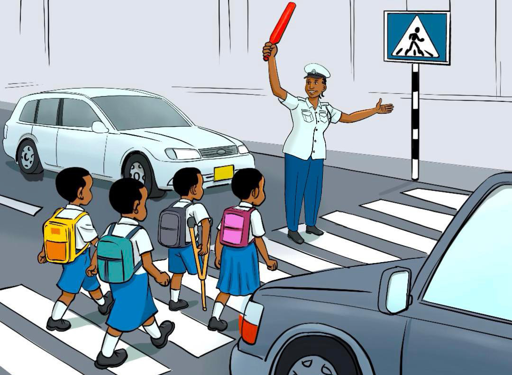

Andika habari fupi inayokutambulisha ukitumia maswali sita ya mwongozo; tumia eneo la kuandikia, kibodi au Breli.
Shughuli ya tatu Andika habari fupi inayokutambulisha wewe kwa mwandiko wa chapa wenye vikonyo. Maswali yafuatayo yatakuongoza: 1. Jina lako ni nani? 2. Una miaka mingapi? 3. Unasoma darasa la ngapi? 4. Unaishi wapi? 5. Unaishi na nani? 6. Familia yenu ina watu wangapi? Zoezi la nne Andika habari ifuatayo kwa mwandiko wa chapa wenye vikonyo: Usalama barabarani
